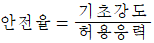
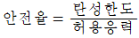
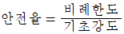
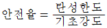
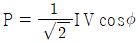
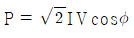
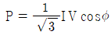
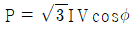

농업기계산업기사 (2012-05-20 기출문제)
1과목: 농업기계공작법
1. 아크 용접 전류가 너무 낮고, 운봉 속도가 느릴 때 발생하는 것으로 융합불량 이라고도 하는 것은?
- 기포
- 언더컷
- 균열
- 오버랩
(정답률: 62%)

2. 밸브 가이드의 중심과 밸브 시트가 동심원이 되는가를 점검할 때 다음 중 가장 적합한 것은?
- 캡 시험기
- 스프링 시험기
- 다이얼 게이지
- 컨로드 얼라이너
(정답률: 66%)
3. 램의 진행방향과 반대방향으로 소재가 압축되며 소비동력이 적고, 흔히 경질 재료에 사용되는 압출(extrusion)은?
- 직접 압출(direct extrusion)
- 역식 압출(inverse extrusion)
- 충격 압출(impact extrusion)
- 관재 압출(tube ectrusion)
(정답률: 72%)
4. 직경이 50㎜ 인 고속도강 호브를 사용하여 합금강 기어 소재에 기어를 절삭하려 할 때 호브의 회전수는 약 몇 rpm 인가? (단, 절삭속도 V=20m/min 이다.)
- 127
- 256
- 57
- 412
(정답률: 58%)
5. 절삭에서 칩의 기본형에 대한 설명 중 잘못된 것은?
- 유동형 칩은 연성재료를 고속 절삭할 때 발생한다.
- 전단형 칩은 연성재료를 저속 절삭할 때 발생한다.
- 열단형 칩은 공구의 전진 방향의 하부 쪽에 균열이 발생한다.
- 균열형 칩은 절삭작업이 진행됨에 따라 서서히 균열이 증대된다.
(정답률: 57%)
6. 방전 가공용 전극의 구비조건으로 틀린 것은?
- 가공 속도가 작을 것
- 가공 절밀도가 높을 것
- 기계 가공이 쉬울 것
- 가공 전극의 소모가 적을 것
(정답률: 55%)
7. 다음 공작기계 중 키 홈 절삭을 할 수 없는 기계는?
- 세이퍼
- 밀링머신
- 선반
- 플레이너
(정답률: 72%)
8. 300㎜의 사인바를 사용하여 피츠겅물의 경사면과 사인바의 측정면이 일치하였을 때, 사인바 양단의 게이지블록 높이 차가 42㎜ 이었다. 경사각은?
- 4°
- 8°
- 12°
- 16°
(정답률: 66%)
9. 주물사의 다공성을 유지하기 위한 첨가재료가 아닌 것은?
- 점토
- 볏짚
- 톱밥
- 코크스분
(정답률: 73%)
10. 사인바로 각도측정 시 측정오차가 커지지 않도록 몇 도 이하에서 측정 하는 것이 좋은가?
- 55°
- 45°
- 60°
- 70°
(정답률: 76%)
11. 나사가 결합된 상태에서 머리 부분이 부러졌을 경우 빼낼 때 사용 공구로 가장 적합한 것은
- 니퍼
- 익스트랙터
- 탭 렌치
- 바이스플라이어
(정답률: 75%)
12. 기계의 분해조립 시 간극조정 단계에서 쓰이는 계측도구로 알맞은 것은?
- 다이얼 게이지
- 필러 게이지
- 압력 게이지
- 피치 게이지
(정답률: 58%)
13. 일반적으로 선반의 크기를 나타내는 것은?
- 선반의 높이와 베드의 길이
- 베드상의 스윙과 센터 간의 최대거리
- 주축대의 높이와 센터 간의 거리
- 선반의 무게와 모터의 마력
(정답률: 68%)
14. 연삭기 숫돌의 외경이 200㎜이고, 회전수가 3000rpm이면 숫돌의 원주 속도는 약 몇 m/min 인가?
- 1885
- 2556
- 2775
- 2885
(정답률: 58%)
15. 다음 중 측정에서 우연 오차를 없애는 최선의 방법은?
- 개인 오차를 없앤다
- 온도에 의한 오차를 없앤다
- 측정기 자체의 오차를 없앤다
- 반복 측정하여 평균값을 구한다
(정답률: 80%)
16. 치수공차의 설명으로 가장 적합한 것은?
- 기준 치수에서 측정값을 뺀 값
- 최대 허용치수와 최소 허용치수의 차
- 측정치로부터 모평균을 뺀 값
- 측정치로부터 참값을 뺀 값
(정답률: 75%)
17. 인발가공에서 지름이 10㎜ 인 봉재를 지름이 3㎜인 봉재로 만들었을 때 단면 감소율은?
- 80%
- 81%
- 90%
- 91%
(정답률: 50%)
18. 1/20㎜ 측정용 버니어 캘리퍼스의 설명으로 올바른 것은?
- 본척 눈금은 1㎜, 1눈금은 12㎜ 25등분한 것
- 본척 눈금은 1㎜, 1눈금은 19㎜ 20등분한 것
- 본척 눈금은 0.5㎜, 1눈금은 19㎜ 25등분한 것
- 본척 눈금은 0.5㎜, 1눈금은 24㎜ 25등분한 것
(정답률: 74%)
19. 다음 중 판금작업에서 두 개의 판재를 서로 겹쳐서 결합시키는 소성작업을 무엇이라고 하는가?
- 시밍(seaming)
- 비딩(beading)
- 컬링(curling)
- 엠보싱(embossing)
(정답률: 55%)
20. 연삭숫돌 표면에 무디어진 입자나 기공을 메우고 있는칩을 제거하여 본래의 형태로 숫돌을 수정하는 방법은?
- 드레싱
- 채터링
- 글레이징
- 로딩
(정답률: 71%)
2과목: 농업기계요소
21. 300rpm으로 10PS을 전달하는 트랙터 로터리 회전 중실축에 굽힘모멘트 3000kgf-cm 가 동시에 작용하는 경우에 축지름의 크기 d는 약 몇 ㎜ 정도가 가장 적합한가? (단, 허용 비틀림응력 τa=400kg/cm2이고, 굽힘모멘트와 비틀림모멘트의 동적효과계수는 Km=1.5, Kt=1.2 로 한다)
- 41
- 51
- 65
- 78
(정답률: 40%)
22. 유량을 조절하는 밸브가 아닌 것은?
- 나비밸브
- 격막밸브
- 슬루스밸브
- 체크밸브
(정답률: 56%)
23. 끼워맞춤의 종류가 아닌 것은?
- 헐거운 끼워 맞춤
- 억지 끼워 맞춤
- 중간 끼워 맞춤
- 보통 끼워 맞춤
(정답률: 47%)
24. 700rpm으로 1400kg-cm 의 토크를 전달할 때 필요 한 마력은?
- 8PS
- 10PS
- 14PS
- 16PS
(정답률: 55%)
25. 한쌍의 기어에서 잇면 사이에 작용하는 수직하중이 너무 과중하면 기어의 회전과 더불어 과대한 반복응력이 생겨 심한 마모로 잇면에 발생하는 현상은?
- 이의 전위
- 이 뿌리의 절삭
- 이의 언더컷(undercut)
- 이의 점부식(pitting)
(정답률: 43%)
26. 1개의 리벳으로 2개의 전단면을 갖는 경우 안전을 고려한 허용하중은 1개의 전단면을 가질 때의 약 몇 배 정도가 가장 적합한가?
- 0.8
- 1.0
- 1.8
- 3.0
(정답률: 46%)
27. 한쌍의 헬리컬 기어의 잇수가 20, 60 일 때, 축직각 모듈이 4. 비틀림각이 15° 일 경우 치직각(이직각)모듈과 중심거리(㎜)는 얼마인가?
- 3.86, 165.6
- 4.14, 171.4
- 3.86, 154.4
- 4.14, 165.6
(정답률: 44%)
28. 다음 중 일반적인 기계부품의 체결용으로 가장 많이 사용되는 나사는?
- 삼각나사
- 사다리꼴나사
- 사각나사
- 톱니나사.
(정답률: 56%)
29. 500kgfm의 비틀림 모멘트를 받고 있는 축의 직경은 약 몇 ㎜ 이상이어야 하는가? (단, 축 재료의 허용전단응력 τ=5kgf/mm2 이다)
- 80
- 70
- 60
- 50
(정답률: 30%)
30. 브레이크 드럼의 지름이 500㎜, 브레이크 드럼에 수직하게 작용하는 힘이 3kN인 경우 드럼에 작용하는 토크는? (단, 마찰계수 μ=0.2 이다)
- 150N-m
- 100N-m
- 75N-m
- 15N-m
(정답률: 41%)
31. 와이어 로프의 크기는 일반적으로 무엇으로 표시하는가?
- 소선의 지름
- 소선의 길이
- 외접원의 지름
- 스트랜트의 길이
(정답률: 56%)
32. 축지름이 240㎜에 스러스트 하중이 1500kgf 작용할 때, 컬러 베어링의 외경이 370㎜일 경우 최대 허용압력이 0.⑤kgf/mm2 이면 최소 몇 개의 컬러가 필요한가?
- 5
- 6
- 7
- 10
(정답률: 36%)
33. 2개의 축을 축 방향으로 연결하는데 사용하는 결합요소로 주로 인장하중 또는 압축하중을 받는 축을 연결하는 것은?
- 코터
- 묻힘 키
- 안장 키
- 접선 키
(정답률: 49%)
34. 어떤 코일 스프링에 40kgf의 하중을 걸었더니 그 처짐이 5㎝였다. 이 스프링의 스프링 상수는 몇 kgf/㎝인가?
- 2
- 4
- 6
- 8
(정답률: 49%)
35. 기관의 흡배기 밸브의 코일 스프링의 점검항목으로 거리가 먼 것은?
- 장력
- 직각도
- 자유고
- 감김수
(정답률: 60%)
36. 다음 중 V벨트의 일반적인 규격(형식)을 나타내는 기호가 아닌 것은?
- M
- A
- B
- O
(정답률: 62%)
37. 플라이 휠(fly wheel)의 에너지를 저장할 수 있는 능력은 무엇에 의해 결정되나?
- 중량모멘트
- 관성모멘트
- 방출모멘트
- 압축모멘트
(정답률: 60%)
38. 기계의 안전설계에서 하중의 종류 등의 사용 조건에 따라 결정되는 안전율을 나타낸 식은?




(정답률: 54%)
39. 농업 기계는 수리부품의 교환을 용이하게 하기 위하여 표준화를 많이 하고 있다. 표준화의 장점이 아닌 것은?
- 시장조사에 의하여 생산량을 자유로 결정할 수 있다.
- 생산, 설계, 시험방법 등이 규격화 되어 있어 생산이 능률적이다.
- 규격품의 품질, 형상, 치수 등은 단계적으로 규정되어 있어 단가가 높아진다.
- 검사 방법이 표준화되어 있어 품질관리가 쉬워 품질이 향상된다.
(정답률: 69%)
40. 일반적인 너트의 풀림을 방지하는 방법이 아닌 것은?
- 나비너트 사용
- 스프링 와셔(washer) 사용
- 분할핀 사용
- 로크 너트(lock-nut) 사용
(정답률: 63%)
3과목: 농업기계학
41. 자탈형 콤바인의 주행장치를 크롤러형으로 하는 이유로 가장 적합한 것은?
- 접지압을 적게 하기 위함이다.
- 선회 동작이 용이하기 때문이다.
- 기체 높이를 낮게 하기 위함이다.
- 논두렁을 잘 넘어갈 수 있기 때문이다.
(정답률: 58%)
42. 목초의 건조를 촉진시키기 위하여 목초를 뒤집는 일을 주목적으로 하는 작업기는?
- 헤이테더(hay tedder)
- 헤이베일러(hay baler)
- 헤이레이크(hay rake)
- 헤이로더(hay loader)
(정답률: 60%)
43. 목초 수확기(forage harvester)의 주 작업이 아닌 것은?
- 목초를 베는 작업
- 목초를 잘게 세절하는 작업
- 목초를 묶는 작업
- 잘라진 목초를 운반차로 이송하는 작업
(정답률: 49%)
44. 목초나 채소 종자와 같이 크기가 작고 불규칙 형상의 종자를 파종하는 기계로 가장 적합한 것은?
- 광폭휴립 산파기
- 세조파기
- 동력살분파기
- 공기식 점파기
(정답률: 52%)
45. 일반적으로 과일의 선별인자로서 잘못된 것은?
- 색깔
- 당도
- 비중
- 외관
(정답률: 63%)
46. 탈곡기의 급통 유효지름이 42㎝, 주속도가 12㎧ 일 때 급통의 회전수는?
- 약 265rpm
- 약 546rpm
- 780rpm
- 약 1062rpm
(정답률: 48%)
47. 연삭식 정미기에 관한 설명 중 틀린 것은?
- 높은 압력을 이용하므로 정백실 내의 압력은 마찰식보다 높다.
- 도정된 백미의 표면이 매끄럽지 못하고 윤택이 없는 결점이 있다.
- 정백 정도는 곡물이 정백실 내에 머무르는 시간에 비례한다.
- 연삭식 정미기는 쌀알이 부서지는 경우가 적은 것이 특징이다.
(정답률: 53%)
48. 다음 중 올바른 분뇨 처리 방법이 아닌 것은?
- 분뇨처리과정에는 고체와 액체를 분리하는 고액분리
- 액상의 분뇨는 발효조를 이용하여 액상콤포스트를 만들 수 있으며 이것은 퇴비살포기를 이요하여 논밭에 살포한다.
- 액상 분뇨가 과량으로 발생할 때는 정화시설을 통해 방류시킨다.
- 고형분을 콤포스트화 할 때에는 유기물의 분해 속도가 최대가 되도록 호기성 발효에 유리한 짚. 톱밥, 왕겨등을 혼합한다.
(정답률: 60%)
49. 채취된 시료의 질량이 20g, 완전히 마른 후의 질량이 18g 이라면 습량기준 함수율은 얼마인가?
- 10.0%
- 10.5%
- 11.1%
- 12.0%
(정답률: 47%)
50. 방제용 기계가 갖추어야 할 조건이 아닌 것은?
- 살포대상에 약제의 도달성이 좋아야 한다.
- 살포대상에 약제가 균일하게 뿌려져야 한다.
- 살포대상에 약제의 증발성이 좋아야 한다.
- 살포대상작물에 약제가 골고루 부착되어야 한다.
(정답률: 67%)
51. 다음 중 조파기로 파종할 때 종자의 이동과 파종순서로 가장 적절한 것은?
- 종자(호퍼)→복토장치→종자배출장치→구절기→진압기
- 종자(호퍼)→종자배출장치→진압기→복토장치→구절기
- 종자(호퍼)→종자배출장치→복토장치→구절기→진압기
- 종자(호퍼)→종자배출장치→구절기→복토장치→진압기
(정답률: 59%)
52. 스프링클러를 이용한 관수 시 단점에 속하지 않는 것은?
- 시설비가 다소 비사다.
- 수압과 바람의 영향을 받는다.
- 가지와 잎이 많은 경우에는 잎에서 증발손실이 많다.
- 과수에만 사용 할 수 있다.
(정답률: 63%)
53. 다음 중 동력분무기의 분무 상태가 나쁘고 분무입자가 큰 경우의 원인이 아닌 것은?
- 노즐구멍이 마모되어 커졌다.
- 노즐의 구멍수가 적다.
- 압력이 떨어졌다.
- 흡입량이 적다.
(정답률: 60%)
54. 다음 중에서 자탈형 콤바인에는 없고 투입식 콤바인(보통형 콤바인)에만 있는 것은?
- 예취날
- 릴
- 탈곡통
- 풍구
(정답률: 64%)
55. 과수원 등에서 사용되는 대형 동력액제 살포기로서 분사되는 액제의 입자가 인력분무기에 비해 미세한 분무기는?
- 파이프더스터
- 인력살포기
- 스피드스프레이어
- 동력살분무기
(정답률: 61%)
56. 산림 속에 벌채된 목재를 임도까지 운반하는 기계장치로는 보통 집재기를 사용한다. 다음 중 집재기를 구성하는 기계요소가 아닌 것은?
- 스틸 와이어로프
- 가지 절단기
- 권취드럼
- 정역회전 장치
(정답률: 56%)
57. 다음 중 원판형 플라우의 장점이 아닌 것은?
- 토질에 따라 플라우 각도를 변경하여 사용할 수 있다.
- 반전 성는은 몰드보드 플라우 보다 높다.
- 스크레이퍼에 의한 흙의 부착이 적다.
- 플라우의 회전으로 견인 저항이 적다.
(정답률: 54%)
58. 양수량은 18m3/min, 양정는 7m, 펌프의 전효율이 76% 일 때, 양수기를 구동하기 위한 원동기 축동력(kW)은?
- 27.1
- 32.5
- 36.8
- 45.1
(정답률: 32%)
59. 이앙기에서 경반이 일정하지 않아도 기체의 안전성을 유지하고 작업정도를 좋게 하는 것은?
- 식부장치
- 플로트
- 모탑재대
- 차륜
(정답률: 54%)
60. 경운작업에서 흙을 미리 수직으로 절단하여 절삭작용을 도와주는 플라우의 보조장치로 알맞은 것은?
- 콜터
- 트렌처
- 마스트
- 이체
(정답률: 58%)
4과목: 농업동력학
61. 전기가 1초 동안에 하는 일이 크기를 전력이라 하며, 기본단위로 와트(W)를 사용한다. 다음 중 전류 I, 전압 V, 위상차 ø인 3상 교류의 전력 P를 계산하는 식은?




(정답률: 42%)
62. 트랙터 앞차축의 하중을 균등하게 하여 차축과 축 받침의 미모를 방지하고자 앞바퀴의 아래쪽을 위 쪽보다 약간 좁게 조정하여 놓은 것을 무엇이라 하는가?
- 캡버각
- 캐스터각
- 코인
- 킹핀경사각
(정답률: 57%)
63. 가솔린 기관 성능시험에서 출력이 15.2kW일 때, 연료 소비량이 3.9kg/h이었다. 사용 가솔린의 저위 발열량이 44MJ/kg 일 때 이 기관의 제동열효율은 약 몇 % 인가?
- 24
- 28
- 32
- 36
(정답률: 32%)
64. 다음은 전동기의 기동방법이다. 농형 3상유도전동기의 기동방법이 아닌 것은?
- 스타델타 기동법
- 기동보상기 기동법
- 리액터 기동법
- 분상기동형 기동법
(정답률: 52%)
65. 4행정 기관은 크랭크 축 몇 회전에 1사이클을 마치는가
- 1회전
- 2회전
- 4회전
- 8회전
(정답률: 65%)
66. 디젤 엔진에 필요한 장치가 아닌 것은?
- 점화장치
- 연료분사장치
- 윤활장치
- 냉각장치
(정답률: 69%)
67. 유압식 브레이크가 작동하는데 필요한 구성 장칭 해당하지 않는 것은?
- 브레이크 슈
- 휠 실린더.
- 피니언 기어
- 미스터 실린더
(정답률: 63%)
68. 가솔린 엔진에 있어서 압축비를 7, 동작가스의 단열지수가 1.4 이면 이론적 효율은 약 몇 %가 되는가?
- 26
- 38
- 47
- 54
(정답률: 28%)
69. 다음 중 앞바퀴 정렬과 관계가 없는 것은?
- 휠 웨이트
- 토인
- 캐스터각
- 캠버각
(정답률: 68%)
70. 구동축 하중이 1250kg, 차속은 0.75㎧일 때의 견인력 10kN인 트랙터의 기관출력은 20kW이었다. 이 트랙터의 총 효율을 구하면 몇 % 인가?
- 37.5
- 50.5
- 60.3
- 74.5
(정답률: 40%)
71. 가솔린기관을 시동할 때 기화기의 벤추리관 입구에 설치 혼합가스의 농도를 짙게 하여 시동을 용이하게 하는 것은?
- 쵸크 밸브
- 스로틀 밸브
- 커넥팅 로드
- 연료 여과기
(정답률: 69%)
72. 3점 링크 히치에 작업기를 장착하여 사용할 때의 특징으로 틀린 것은?
- 유압제어가 불가능하다
- 작업 회전반경이 작다
- 큰 견인력을 얻을 수 있다
- 작업기 운반이 용이하다.
(정답률: 60%)
73. 다음 중 기관의 연료소비율을 나타내는 단위로 적합한 것은?
- g/kW-h
- L/km
- km/L
- kW/hr
(정답률: 56%)
74. 다음 중 축전지 3개를 병렬로 연결하였을 때 가장 올바른 것은?
- 동일 부하로 3배 이상 사용할 수 있다.
- 3배의 전압을 높여 쓸 수 있다.
- 전류는 일정하나 많은 전압을 얻을 수 있다.
- 축전지의 수명을 연장시킬 수 있다.
(정답률: 59%)
75. 유도 전동기에서 동기속도에 관한 설명으로 올바른 것은?
- 슬립이 증가하면 동기속도는 증가한다
- 부하가 증가하면 동기속도는 증가한다
- 주파수가 증가하면 동기속도는 감소한다
- 고정자 극수가 증가하면 동기속도는 감소한다
(정답률: 47%)
76. 운전 중인 내연기관으로부터 지압계를 이용하여 측정할 수 있는 선도는?
- 압력-체적
- 온도-체적
- 압력-온도
- 체적-시간
(정답률: 56%)
77. 디젤기관의 직접분사식 연소실에 관한 설명으로 잘못된 것은?
- 열효율이 높다
- 분사압력이 높다
- 시동이 곤란하다
- 연료분사장치의 수명이 짧다
(정답률: 64%)
78. 트랙터가 선회할 때 구동차축의 좌우 속도비를 자동적으로 조절해 주는 장치는?
- 조향장치
- 차동장치
- 최종감속장치
- 제동장치
(정답률: 62%)
79. 시동전동기의 피니언 기어와 맞물려 회전되는 것은?
- 가버너 기어
- 크랭크 기어
- 타이밍 기어
- 플라이휠 링기어
(정답률: 62%)
80. 트랙터 동력취출축(PTO)의 동력을 로타리 작업기의 경운축에 전달할 때 로타리 작업기의 구동방식이 아닌 것은?
- 이중 측방 구동식
- 중앙 구동식
- 측방 구동식
- 분할 구동식
(정답률: 56%)